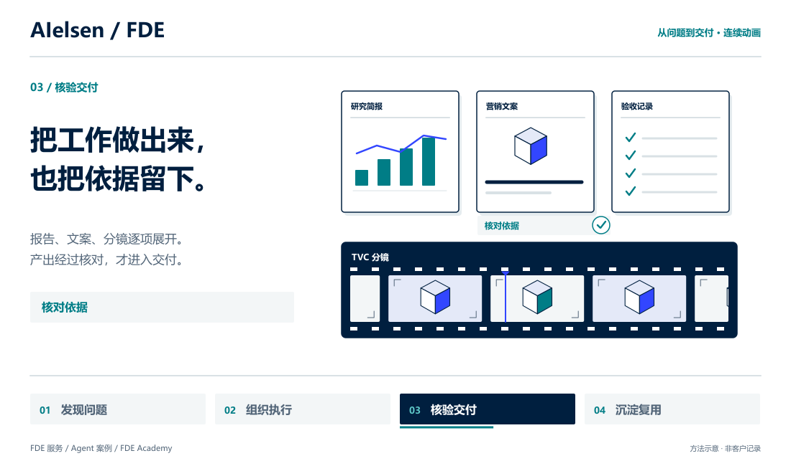

<!doctype html>
<html lang="zh-CN">
<meta charset="utf-8">
<meta name="viewport" content="width=device-width,initial-scale=1">
<title>AIelsen FDE · Motion preview</title>
<style>
*{box-sizing:border-box}body{margin:0;background:#f3f6f7;color:#001f3f;font:16px/1.6 system-ui,"Microsoft YaHei",sans-serif}main{max-width:1160px;margin:36px auto;padding:0 24px}header{display:flex;align-items:center;justify-content:space-between;gap:20px;margin-bottom:22px}.brand{font-size:24px;font-weight:750}.controls{display:flex;gap:8px;flex-wrap:wrap}button,a{font:inherit}button{padding:9px 17px;background:white;color:#001f3f;border:1px solid #d9e1e5;border-radius:4px;cursor:pointer;min-height:44px}button[aria-pressed=true]{background:#001f3f;color:white}button:focus-visible,a:focus-visible{outline:3px solid #3246ff;outline-offset:3px}.stage{background:white;border:1px solid #d9e1e5;box-shadow:0 14px 40px #001f3f0a}.stage img{display:block;width:100%;height:auto;aspect-ratio:1100/650}.notes{display:flex;justify-content:space-between;gap:14px;color:#526578;font-size:14px;margin-top:18px}.notes a{color:#007d86}.status{min-height:24px;font-weight:600;color:#007d86}@media(max-width:620px){main{margin:20px auto;padding:0 12px}header{display:block}.controls{margin-top:12px}.notes{display:block}}
</style>
<main>
 <header><div class="brand">AIelsen / FDE</div><div class="controls"><button id="zh" aria-pressed="true">中文</button><button id="en" aria-pressed="false">English</button><button id="play">播放动画</button><button id="still">静态预览</button></div></header>
 <div class="stage"></div>
 <div class="notes"><div><div id="status" class="status" role="status" aria-live="polite"></div><span id="description">18 秒 · 20 FPS · 360 帧连续运动 · 无声循环</span></div><a href="https://github.com/NewenergyEric/enterprise-ai-playbook" target="_blank" rel="noopener">GitHub ↗</a></div>
</main>
<script>
const el=id=>document.getElementById(id);let lang='zh',playing=!matchMedia('(prefers-reduced-motion: reduce)').matches;
function update(){const zh=lang==='zh';document.documentElement.lang=zh?'zh-CN':'en';el('visual').src=`../media/fde-motion-${lang}.${playing?'gif':'png'}`;el('visual').alt=zh?'FDE 工作过程：资料聚合、任务流转、产物展开、交付归档。':'FDE delivery in motion: collect information, connect tasks, review outputs and package reusable capability.';el('zh').setAttribute('aria-pressed',zh);el('en').setAttribute('aria-pressed',!zh);el('play').textContent=zh?'播放动画':'Play animation';el('still').textContent=zh?'静态预览':'Static preview';el('play').setAttribute('aria-pressed',playing);el('still').setAttribute('aria-pressed',!playing);el('status').textContent=playing?(zh?'连续动画正在播放':'Continuous animation is playing'):(zh?'静态预览；点击“播放动画”开始':'Static preview; select Play animation to start');el('description').textContent=zh?'18 秒 · 20 FPS · 360 帧连续运动 · 无声循环':'18 seconds · 20 FPS · 360 moving frames · Silent loop';}
el('zh').onclick=()=>{lang='zh';update()};el('en').onclick=()=>{lang='en';update()};el('play').onclick=()=>{playing=true;update()};el('still').onclick=()=>{playing=false;update()};update();
</script>
</html>
